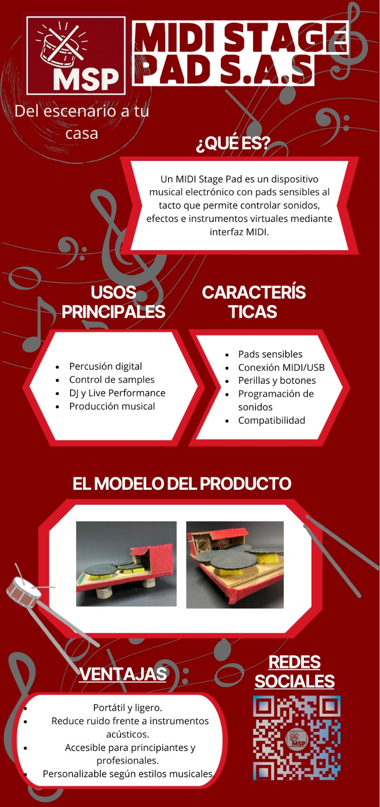

Bienvenido
El Midi Stage Pad es un invento pensado para que cualquiera pueda hacer música sin tantas barreras. Es como una batería, pero en versión digital: una superficie plana con pads sensibles al tacto que responden a cada golpe y lo convierten en sonidos de percusión. La idea es que sea fácil de usar, portátil y mucho más económico que un instrumento tradicional. Puedes conectarle audífonos y practicar sin molestar a nadie, o enchufarlo a un parlante para compartir tu música con los demás. Además, lo hemos diseñado con materiales que buscan ser más amigables con el medio ambiente, porque también queremos que el proyecto aporte a la sostenibilidad. En pocas palabras: es un dispositivo hecho para aprender, experimentar y disfrutar de la música en cualquier lugar, sin complicaciones.
Novedades
Estamos muy emocionados con los avances de Midi Stage Pad. Ya tenemos un prototipo funcionando que reconoce los golpes en los pads y reproduce distintos sonidos de batería. Poco a poco hemos ido puliendo detalles, como la sensibilidad al tacto, para que tocar se sienta más natural y divertido. También añadimos más sonidos: ahora puedes tocar desde un bombo hasta un platillo o una conga, todo en el mismo dispositivo. El diseño físico lo hemos mejorado para que sea más ligero y resistente, ideal para llevarlo a cualquier parte.
Infografía
Aquí puedes ver de forma visual cómo funciona y qué ofrece el Midi Stage Pad:
